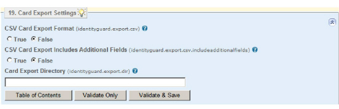

|
IdentityGuard Server 11.0 Administration Guide |
|
IdentityGuard Server 11.0 Administration Guide |
After you create preproduced grid cards in Entrust IdentityGuard, you can export the grid card information to a file. (When you export grid card information, you do not remove the information from Entrust IdentityGuard, you only copy the information to a file.) You can use this file to produce physical cards for your users.
The grid card export properties allow you to choose the format of the export file, and the location of the file. See Creating grid cards for more information about the use of the grid card export feature.
To configure the grid card export properties
1. Start the Entrust IdentityGuard Properties Editor. (See Logging in and out of the Properties Editor.)
2. On the Table of Contents, click Card Export Settings.

3. Under CSV Card Export Format, do one of the following:
● To export grid card information in CSV (comma-separated value) format, select True.
● To export grid card information in XML format, select False.
4. Set CSV Card Export Include Additional Fields to True if the CSV export format contains these additional fields: card generate date, card expiry date, card superseded date, and card state. If this property is set to true, the SCR format includes the additional fields. The default is False.
5. In the Card Export Directory field, enter the location of the grid card export file.
Note: If you
are exporting to a network share drive on Windows 2003, you must specify
the UNC path. That is, rather than just using the drive letter, you use:
\\\\<Servername>\\
Where <Servername> is the name of the network drive to export to.
In addition, you must ensure that the server running the service is part
of a group that has permissions that allow access to the shared drive.
If you do not enter a location, Entrust IdentityGuard exports grid cards to:
● on UNIX, $IG_HOME/export
● on Microsoft Windows, <$IG_HOME>\export
6. Click Validate & Save.